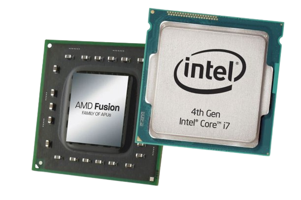
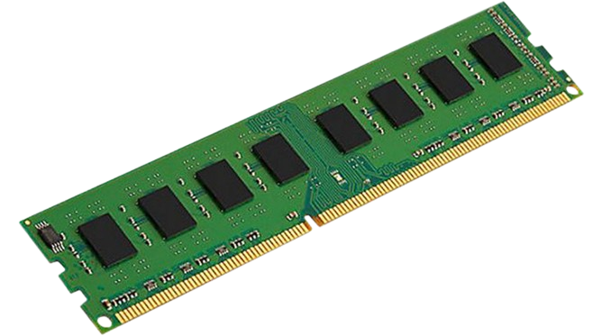
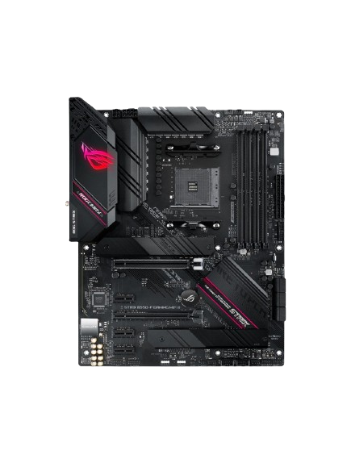
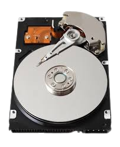
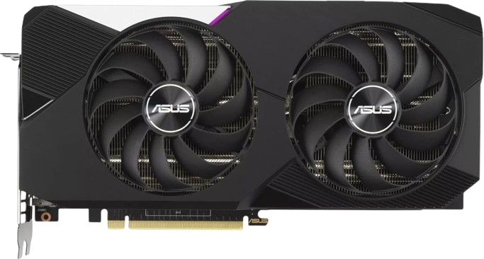

|  |  |  |
|---|
1. CPU - commonly referred to as the processor - is the ‘brain’ of your computer. The CPU solves all the sophisticated algorithms and programming your computer does while running programs or applications. |
2. RAM - RAM is a volatile type of memory, meaning all stored memory is refreshed after turning off the PC. This allows the device to quickly absorb new data immediately during the next session, prompting quicker loading processes. |
3.MOTHERBOARD - The motherboard is a computer's central communications backbone connectivity point, through which all components and external peripherals connect. Motherboards can be found in virtually all computers. |
|---|
|  |  |
|---|
4. STORAGE DEVICES - A storage device is a piece of hardware that is primarily used for storing data. |
5. GPU - A graphics processing unit (GPU) is an electronic circuit that can perform mathematical calculations at high speed. |
|---|